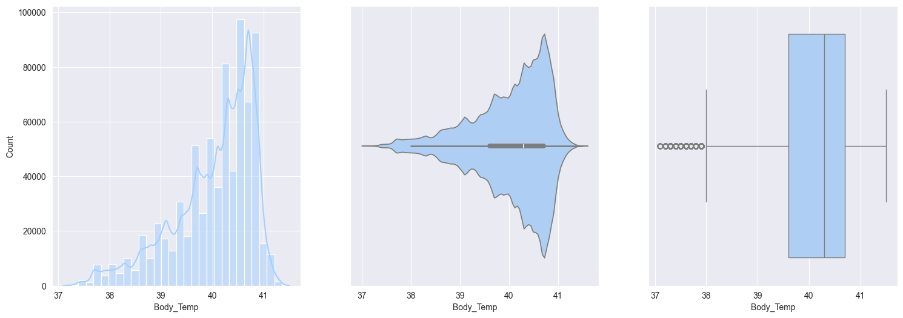
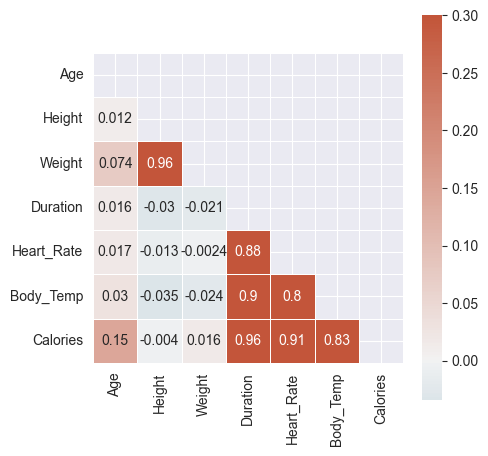
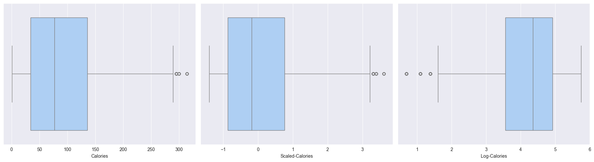

train_df = pd.read_csv('playground-series-s5e5/train.csv', index_col='id')
test_df = pd.read_csv('playground-series-s5e5/test.csv', index_col='id')
original_df = pd.read_csv('playground-series-s5e5/calories.csv', index_col="User_ID")Basics of Exploratory Data Analysis
machine learning
python
kaggle
Loading the data
- This data is from the Playground series in Kaggle (Season 5, Episode 5)
- Calorie Prediction Competition
- We let the
idcolumn in csv files to be the indexes in the dataframe, else it would have become an additional and unnecessary feature to handle
test_df.head()| Sex | Age | Height | Weight | Duration | Heart_Rate | Body_Temp | |
|---|---|---|---|---|---|---|---|
| id | |||||||
| 750000 | 0 | 45 | 177.0 | 81.0 | 7.0 | 87.0 | 39.8 |
| 750001 | 0 | 26 | 200.0 | 97.0 | 20.0 | 101.0 | 40.5 |
| 750002 | 1 | 29 | 188.0 | 85.0 | 16.0 | 102.0 | 40.4 |
| 750003 | 1 | 39 | 172.0 | 73.0 | 20.0 | 107.0 | 40.6 |
| 750004 | 1 | 30 | 173.0 | 67.0 | 16.0 | 94.0 | 40.5 |
Understanding the data
- Below we check if any
MissingorNaNvalues present in either ‘train’, ‘test’, ‘original’ data
# train_df.isna().sum().eq(0).all()
print((train_df.isna().sum() == 0).all())
print((test_df.isna().sum() == 0).all())True
True- Getting information on all features in the data, particularly we can find which columns are numerical and which are not
- We identify that by looking at the
Dtypefor each columnObject: Categorical / text or stringfloat/int: is numerical, discrete or continuous
- This data looks fairly straight forward, as mostly the features seem numerical
- Only
Sexfeature is categorical, but that is also easy to handle as it has only 2 unique values
- We identify that by looking at the
- The stats of all numerical columns in train & test data look similar
- If you try comparing any statistic for a column in both train & test, they are very close
- So we can think of these data coming in from same distribution
print(train_df.describe().T)
print('--- ' * 20)
print('--- ' * 20)
print(test_df.describe().T) count mean std min 25% 50% 75% max
Age 750000.0 41.420404 15.175049 20.0 28.0 40.0 52.0 79.0
Height 750000.0 174.697685 12.824496 126.0 164.0 174.0 185.0 222.0
Weight 750000.0 75.145668 13.982704 36.0 63.0 74.0 87.0 132.0
Duration 750000.0 15.421015 8.354095 1.0 8.0 15.0 23.0 30.0
Heart_Rate 750000.0 95.483995 9.449845 67.0 88.0 95.0 103.0 128.0
Body_Temp 750000.0 40.036253 0.779875 37.1 39.6 40.3 40.7 41.5
Calories 750000.0 88.282781 62.395349 1.0 34.0 77.0 136.0 314.0
--- --- --- --- --- --- --- --- --- --- --- --- --- --- --- --- --- --- --- ---
--- --- --- --- --- --- --- --- --- --- --- --- --- --- --- --- --- --- --- ---
count mean std min 25% 50% 75% max
Age 250000.0 41.452464 15.177769 20.0 28.0 40.0 52.0 79.0
Height 250000.0 174.725624 12.822039 127.0 164.0 174.0 185.0 219.0
Weight 250000.0 75.147712 13.979513 39.0 63.0 74.0 87.0 126.0
Duration 250000.0 15.415428 8.349133 1.0 8.0 15.0 23.0 30.0
Heart_Rate 250000.0 95.479084 9.450161 67.0 88.0 95.0 103.0 128.0
Body_Temp 250000.0 40.036093 0.778448 37.1 39.6 40.3 40.6 41.5- Get column names seperated into numerical & categorical categories
numerical_columns = [col for col in train_df.columns if train_df[col].dtype != 'object']
categorical_columns = [col for col in train_df.columns if train_df[col].dtype == 'object']Univariate analysis: Plotting the data
1. Plot the categorical features, observations from below plots:
- Well balanced male / female classes in the train data
- When plotting box-plt of sex vs calories; min/max, all quartiles are located similarly for both male and female classes. Although there are a few more outliers calories in male class as compared to female class.
for col in categorical_columns:
plt.figure(figsize=(12,6))
plt.subplot(1,2,1)
sns.boxplot(x=train_df[col], y=train_df['Calories'])
plt.subplot(1,2,2)
counts = train_df[col].value_counts()
plt.pie(counts, labels=counts.index, autopct='%1.1f%%')train_df[numerical_columns].skew()Age 0.436397
Height 0.051777
Weight 0.211194
Duration 0.026259
Heart_Rate -0.005668
Body_Temp -1.022361
Calories 0.539196
dtype: float642. Plotting and observe the numerical features:
Age:- heavily skewed to right
- frequency decrease with increase in age
- may suggest that mostly younger people using the workout monitoring app
Height:- minimal skew
- symmetrical, bell shaped, approximately Gaussian (Normal) distribution
Weight:- slightly right skewed, which represent real-world data, upper limits can vary for wegihts
Duration:- approximately Uniform distribution
Heart_rate:- Normally distributed with slight righ skew
- small portion of people with elevated heart rates
Body_temp:- Negatively skewed
- after workout, slightly elevated from normal temperatures makes sense
Calories:- Right skewed, most people burn fewer calories per session, small fraction burn significantly more
for col in numerical_columns:
plt.figure(figsize=(18,6))
plt.subplot(1,3,1)
sns.histplot(data=train_df[col], bins=30, kde=True)
plt.subplot(1,3,2)
sns.violinplot(x=train_df[col])
plt.subplot(1,3,3)
sns.boxplot(data=train_df[col], orient='h')




Bivariate analysis
- Let’s find the Correlations between the numerical features
# train_df[numerical_columns].corr().style.background_gradient()
corr = train_df[numerical_columns].corr()
corr| Age | Height | Weight | Duration | Heart_Rate | Body_Temp | Calories | |
|---|---|---|---|---|---|---|---|
| Age | 1.000000 | 0.011975 | 0.073690 | 0.015656 | 0.017037 | 0.030275 | 0.145683 |
| Height | 0.011975 | 1.000000 | 0.957967 | -0.029936 | -0.013234 | -0.034641 | -0.004026 |
| Weight | 0.073690 | 0.957967 | 1.000000 | -0.020845 | -0.002384 | -0.023717 | 0.015863 |
| Duration | 0.015656 | -0.029936 | -0.020845 | 1.000000 | 0.875327 | 0.903066 | 0.959908 |
| Heart_Rate | 0.017037 | -0.013234 | -0.002384 | 0.875327 | 1.000000 | 0.795972 | 0.908748 |
| Body_Temp | 0.030275 | -0.034641 | -0.023717 | 0.903066 | 0.795972 | 1.000000 | 0.828671 |
| Calories | 0.145683 | -0.004026 | 0.015863 | 0.959908 | 0.908748 | 0.828671 | 1.000000 |
# Plot the correlation matrix with colors
# Generate a mask for the upper triangle
mask = np.triu(np.ones_like(corr, dtype=bool))
# Set up the matplotlib figure
plt.figure(figsize=(5, 10))
# Generate a custom diverging colormap
cmap = sns.diverging_palette(230, 20, as_cmap=True)
# Draw the heatmap with the mask and correct aspect ratio
sns.heatmap(corr, mask=mask, cmap=cmap, vmax=.3, center=0,
square=True, linewidths=.5, cbar_kws={"shrink": .5}, annot=True)
- Quite clear from above color gradients:
Caloriesis highly correlated withDuration,Heart_Rate,Body_TempHeart_RateandBody_Tempare highly correlatedDurationandHeart_Rateare highly correlatedDurationandBody_Tempare highly correlated
- Scatter plots amongst the numerical features
- Hardly any patterns emerge when we compare
CaloriestoAge,Weight,Height - Whereas, strong patterns can be seen with
Duration,Heart_Rate,Body_Temp
- Hardly any patterns emerge when we compare
So it’s fair to say that scatter plots confirm the correlation numbers
fig, axes = plt.subplots(2, 3, figsize=(18, 10))
axes = axes.ravel() # Flatten the 2D array of axes for easy iteration
target = 'Calories'
for i, feature in enumerate(numerical_columns[:-1]):
axes[i].scatter(train_df[feature], train_df[target], alpha=0.2)
axes[i].set_xlabel(feature)
axes[i].set_ylabel(target)
axes[i].set_title(f'{feature} vs {target}')
plt.tight_layout()
plt.show()Data preprocessing
- Map the
Sexfeature into numerical
train_df['Sex'] = train_df['Sex'].map({'male':0, 'female':1})
test_df['Sex'] = test_df['Sex'].map({'male':0, 'female':1})- Make
Xandyvariables
X = train_df.drop('Calories', axis=1)
y = np.log1p(train_df['Calories'])
y_scale = (train_df['Calories'] - train_df['Calories'].mean()) / train_df['Calories'].std()
X_test = test_df- Now let’s try to differentiate between log transformation (
y) and standard scaled (y_scale)- Observations from the boxplots and histplots below:
- Scaling just scales the feature, but the distributions remains same, skew remains the same, outliers are still outliers
- Log transform changes the distribution by reducing the skew, also outliers are compressed
- Observations from the boxplots and histplots below:

# renaming Gender in original_df to Sex
original_df['Gender'] = original_df['Gender'].map({'male':0, 'female':1})
original_df = original_df.rename(columns={'Gender': 'Sex'})- As now we have original_df with same column names and no null samples, we can merge the train_df with original_df
# merge the original data to train_df
train_df = pd.concat([train_df, original_df])(765000, 8)- This way we can get the Mutual Information scores of every feature in
Xagainsty(target)
from sklearn.feature_selection import mutual_info_regression
mi = mutual_info_regression(X=X, y=y, n_neighbors=5)
mutual_info = pd.Series(mi)
mutual_info.index = X.columns- The results of mututal_info_regression clearly concurs the scatter plot patterns and correlations
Duration,Heart_Rate,Body_Tempare containing most mutual information with the Calories- But, then, by human understanding,
Durationalso positively impacts bothHeart_Rate&Body_Temp
mutual_info = pd.DataFrame(mutual_info.sort_values(ascending=False), columns=['Mutual Information'])
mutual_info| Mutual Information | |
|---|---|
| Duration | 1.641224 |
| Body_Temp | 1.120950 |
| Heart_Rate | 0.976502 |
| Age | 0.097669 |
| Height | 0.055549 |
| Weight | 0.055448 |
| Sex | 0.016135 |
- Split the merged df, into train, dev, test split
# shuffle
train_df = train_df.sample(frac=1)def scale_numerical_feature(X):
return (X - np.mean(X)) / np.std(X)Basic models
- Simple Linear regression using just most informative of the features
- I want to see how using just
Durationwould predict theCalories
- I want to see how using just
class SimpleLinearRegression:
def __init__(self, lr = 0.01):
self.lr = lr
self.w = np.random.rand() * 0.1
self.b = np.random.rand() * 0
def get_params(self):
return (self.w, self.b)
# compute predictions for the given input X
def forward(self, X):
return (self.w * X + self.b)
def fit(self, X, y, epochs=100):
n = len(X)
for epoch in range(epochs):
# calculate prediction for X
y_pred = self.forward(X)
# calculate loss wrt y
loss = np.mean((y_pred - y)**2)
# calculate gradients
dw = (2/n) * np.sum((y_pred - y) * X)
db = (2/n) * np.sum(y_pred - y)
# update the params
self.w -= self.lr * dw
self.b -= self.lr * db
# print(f'loss={loss}')
if (epoch + 1) % 100 == 0 or epoch == 0:
print(f'Epoch {epoch + 1}: Loss {loss:.4f}')
def evaluate(self, X, y):
y_pred = self.forward(X)
mse = np.mean((y_pred - y) ** 2)
rmse = np.sqrt(mse)
rmsle = np.sqrt(np.mean((np.log1p(y) - np.log1p(y_pred)) ** 2))
return mse, rmse, rmslen1 = int(0.8 * len(train_df))
n2 = int(0.9 * len(train_df))
X = scale_numerical_feature(train_df['Heart_Rate']) #scale_numerical_feature(train_df['Duration'])
# y = train_df['Calories']
y = np.log1p(train_df['Calories'])
X_train, y_train = X.values[:n1], y.values[:n1]
X_dev, y_dev = X.values[n1:n2], y.values[n1:n2]
X_test, y_test = X.values[n2:], y.values[n2:]model = SimpleLinearRegression(lr=.1)
model.fit(X_train, y_train, epochs=100)Epoch 1: Loss 18.0598
Epoch 100: Loss 0.2066- Some notes from training the
SimpleLinearRegressionusingDurationto explainCalories:- We initialied the
self.was a scalar, so must use only one feature from the dataframe for modeling. - When using the Duration without any centering to 0, it starts with very high loss
- and explodes very fast for
lr = 1e-2 - but at
lr = 1e-3, loss quickly falls around 1
- and explodes very fast for
- With Duration scaled around 0, but Calories not transformed with np.log1p, again loss starts very high and goes down slow
- With Duration - scaled, and Calories log1p transformed, the loss is very slow to converge. My observations are below:
- Your gradients are working ✅
- But learning rate is too low, or
- Your input/target scales are still not ideal, or
- The model’s capacity (just 1 feature) may be too limited for the data variance
- We initialied the
- Let’s work on comparing our custom linear regression model with the standard Sklearn LR
from sklearn.linear_model import LinearRegressionsk_model = LinearRegression()
sk_model.fit(X_train.reshape(-1,1), y_train)LinearRegression()In a Jupyter environment, please rerun this cell to show the HTML representation or trust the notebook.
On GitHub, the HTML representation is unable to render, please try loading this page with nbviewer.org.
LinearRegression()
y_pred = sk_model.predict(X_dev.reshape(-1,1))
rmse = np.sqrt(np.mean((y_dev - y_pred) ** 2))
rmsenp.float64(0.4533044214500241)Weight converged to, by sklearn model: 0.8495730558448487
Weight converged to, by custom model: 0.8495730556549425bias converged to, by sklearn model: 4.1413464025473585
bias converged to, by custom model: 4.141346401700354print(f'weights reached at from two methods are same? {math.isclose(sk_model.coef_[0], model.get_params()[0])}')
print(f'biases reached at from two methods are same? {math.isclose(sk_model.intercept_, model.get_params()[1])}')weights reached at from two methods are same? True
biases reached at from two methods are same? True- Good to conclude that we reach at almost same weight and bias as sklearn LR
- For modeling
Caloriesonly onHeart_Rate
- For modeling